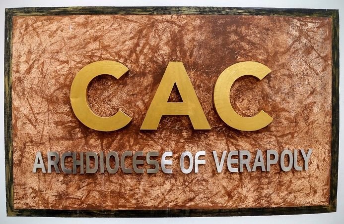
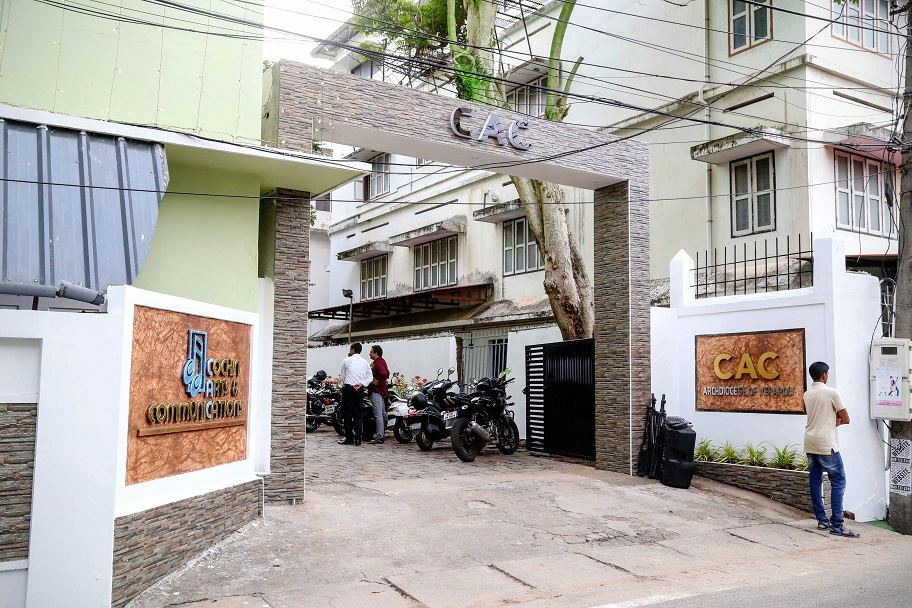
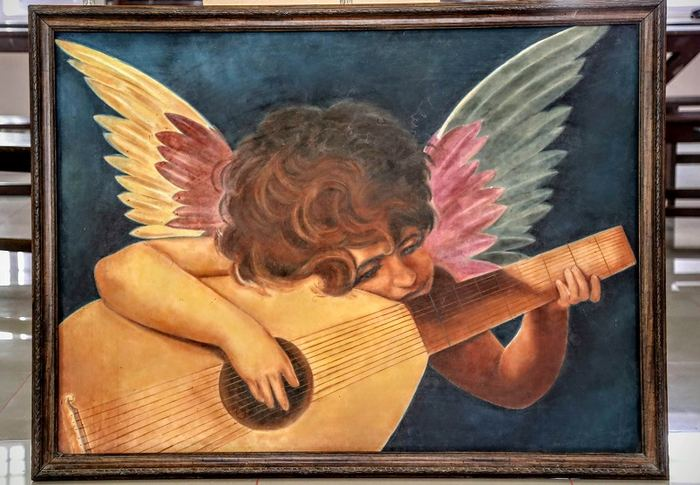
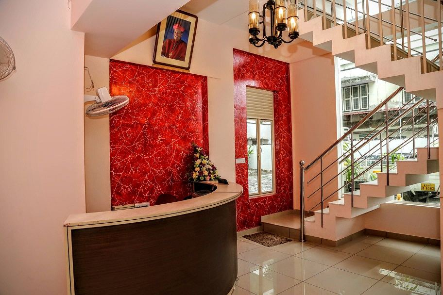
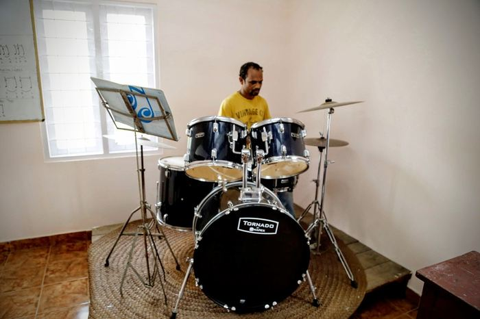
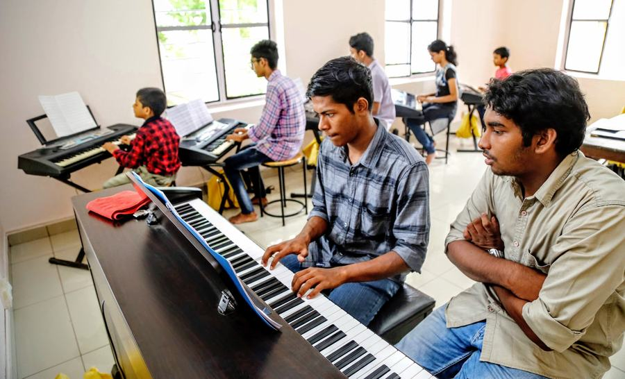
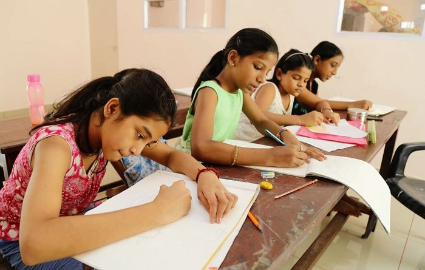
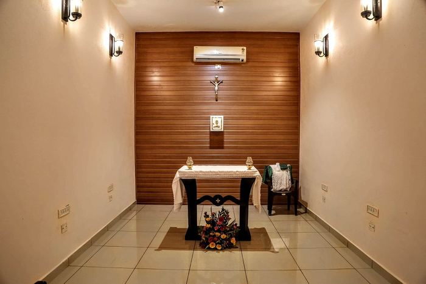
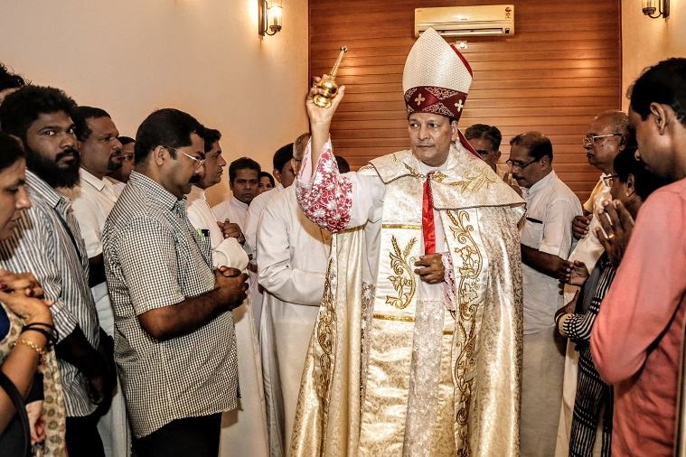

CAC began in 1974, when the Archbishop of Verapoly, Rev. Dr. Joseph Kalanthara, set out to build an institute devoted to music and the liturgical arts. Working with Rev. Fr. Michael Panaikal and Rev. Fr. Joseph Manakkil, he raised a building just behind the old Kerala Times premises — and Cochin Arts & Communications was born.
The early years centred on composing and recording devotional music, arranged by Varghese Malieckal and tuned by Job & George and Jerry Amaldev. As interest grew, CAC formed a full orchestra and Ganamela troupe, drawing singers and musicians from across the region and touring widely with its stage shows.
In 1980, CAC opened its own professional audio recording studio — a rarity at the time — and its recordings became known for their quality. Decades on, the same spirit continues: when Pope John Paul II visited Kerala, it was CAC that coordinated a 100-voice choir and 30-piece orchestra for the occasion.

CAC's mission is to help every student reach their fullest musical and artistic potential — whatever their age, ability or ambition.
Eleven disciplines taught one-to-one or in small groups, in Cochin or online.
A century-old campus, a modern approach to teaching.
From first-time beginners to working musicians — anyone who has picked up an instrument at CAC knows how quickly it becomes second nature.
Small classes and individual attention, backed by a professional in-house recording studio and grounding in harmony and theory.
Our goal is to keep the performing arts approachable and affordable — and to help students meet friends and collaborators for life.
Twenty faculty members across every discipline we teach — here are some of the names our students know best.
Classes, recordings and moments from CAC's Kacherippady campus.

The CAC campus gate, Kacherippady
Student artwork
Reception hall
Drum room
A keyboard lesson in progress
Art & craft class
The campus chapel
An Archdiocese occasion at CACDrop by the campus in Kacherippady, call the office, or send an enquiry and we'll get back to you about classes, timings and fees.